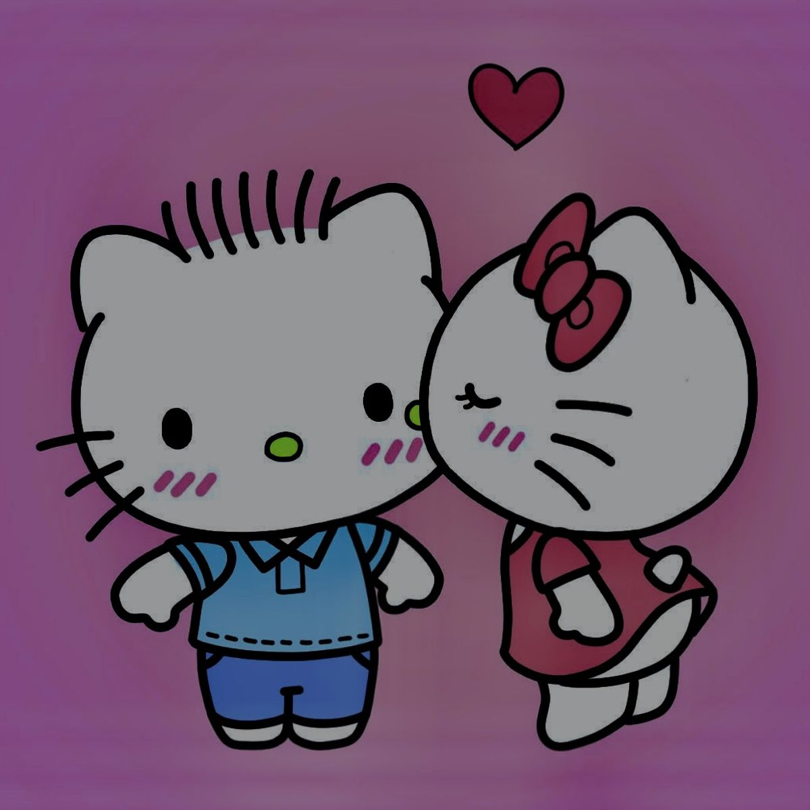

"A vida não exige perfeição, exige consciência."
clique aqui para ver a hello kitty/a>Quando dois amantes se olham nos olhos, a batida de seus corações sincroniza.
Não escute trap, seus ouvidos vão sangrar.
Abraçar é um analgésico natural
O amor é realmente tudo o que importa
Para ser feliz, você precisa eliminar duas coisas: o medo de um futuro incerto e a recordação de um passado ruim.
Sabia que é possível morrer de coração partido? isso acontece devido à síndrome do coração partido, uma condição médica real desencadeada por estresse emocional intenso.
